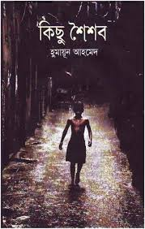
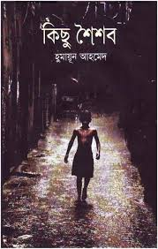
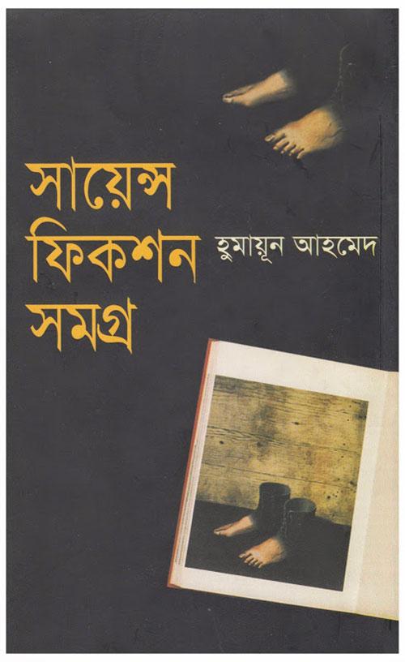
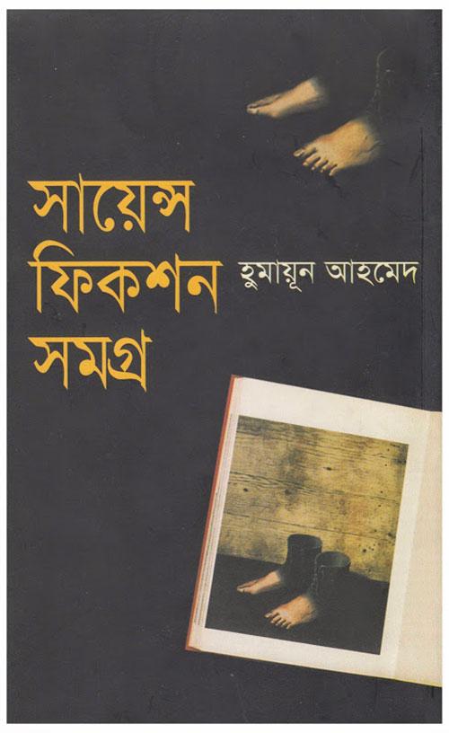
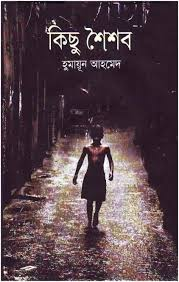
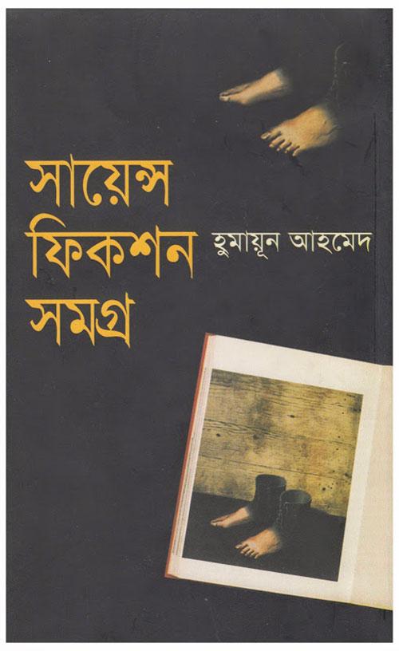
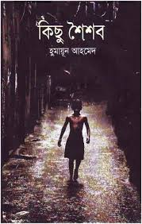
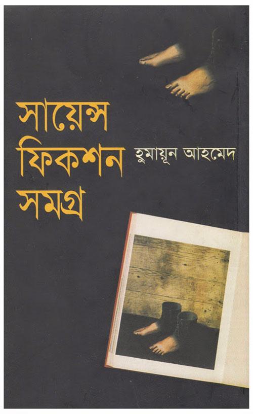

 


 



Awards and honors : Humayun Ahmed was awarded several awards for his numerous multi-dimensional creations. He was awarded the Writer Shibir Award for his contribution to Bangla fiction. He was awarded the Bangla Academy Award for his outstanding contribution to the Bengali novel. He also received the Bangladesh Children Academy Award. In 5, he received the Michael Madhusudan Medal. He was awarded the Humayun Qadir Memorial Award in the 5th. He also won the Zainul Abedin gold medal. He received his first National Film Award in the Best Storytelling category for his 12th Shankil Prison Film. [1] The Government of Bangladesh awarded him the Ekushey Padak, the second civilian honor in the country, for his unique contribution to Bangla language and literature. [3] In the same year, Parashmani won three National Film Awards for Best Film, Best Narrator and Best Dialogue Writer in the Film. [1] He won the Bacchus Award for Best Film, Best Narrator and Best Lyricist for his film on the day of Shravan Megh (1). [6] In addition, the film ranked ninth in the list of the top ten Bangladeshi films by critics in the Site and Sound Magazine survey. [12] In his novel, he received the National Film Award in the Best Screenplayer category for his film Darachini Island (24), produced by Touki Ahmed. [1] He was nominated for the Best Film Director category in the Critic Award Branch in the 5th Merrill-I Prakash Award for the movie I Have Water (25). In his novel, Murshedul Islam, he won the Bacchus Award in the Best Storyteller category for his film Priyateshwu (25). [4] Ghetto for the movie (262) He received two National Film Awards in the Best Director and Best Screenplay category. Received the Director's Award. He was awarded posthumous Best Dialogue Writer at the 5th National Film Award for his film Anil Bagchi (20), produced by Morshedul Islam.
Press the buttons below to go to the previous page